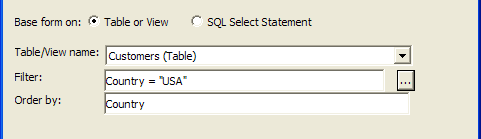
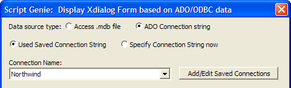
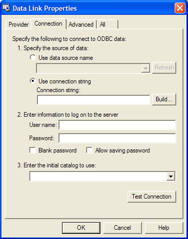
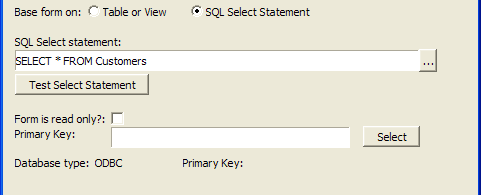
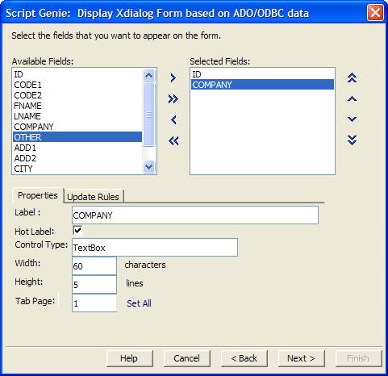
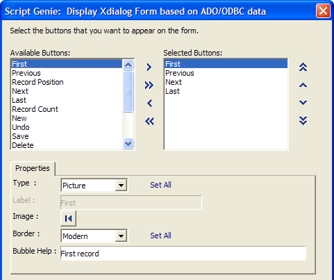
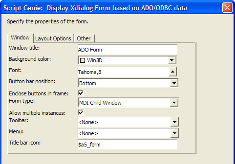
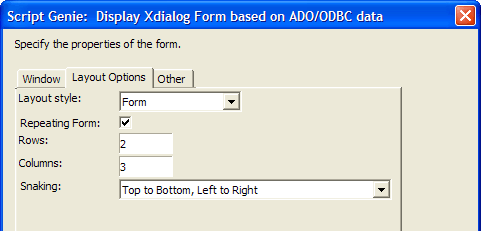

Display Xdialog Form based on ADO/ODBC Data
Overview
Many applications require a view of external data contained in ADO or ODBC compliant databases. The Display Xdialog Form based on ADO/ODBC Data action allows you to quickly build a dialog box that reads and displays data from compliant databases, such as MySQL, Oracle, and Microsoft Access.
Procedure
The Xdialog box needs a variable to capture the value generated by each control.
Create a new Action Script.
Select "Xdialog Windows" in the Category list.
Select "Display Xdialog Form based on ADO/ODBC Data" in the Action list.
Click OK to display the Script Genie.
Select whether the data source is an Access .mdb file or an ADO Connection string.

If you selected Access .mdb file in step 1, continue with Access MDB File. Otherwise, continue with ADO Connection String.
Enter the MDB Filename and click Connect.
Select whether to base the form on a Table or View or a SQL Select Statement.

If you selected Table or View in step 2, continue with Table or View. Otherwise, continue with SQL Select Statement.
Select Used Saved Connection String or Specify Connection String now.

If you clicked Used Saved Connection String in step 1, make a selection from the Connection Name list. Otherwise, continue with Specify Connection String now.
Click Connect.
Continue with SQL Select Statement.
Click Build to display the Data Link Properties dialog box.

 Note : See Windows
documentation for a full description of the Data Link
Properties dialog box. This procedure documented here works for
Microsoft Access databases.
Note : See Windows
documentation for a full description of the Data Link
Properties dialog box. This procedure documented here works for
Microsoft Access databases.
Select Use Connection String and click Build... to display the Select Data Source dialog box.
Enter a name for the data source in the DSN Name field and click New... .
Select "Microsoft Access Driver (*.mdb)" in the Create New Data Source dialog and click Next >.
Click Browse... and navigate to the folder that contains the Microsoft Access database.
Select "All Files" in the Save as type field.
Select the Microsoft Access database and click Save.
Click Next >, Finish, and OK. to display the Select Database dialog.
Select the Microsoft Access database and click OK.
Select the resulting DSN file in the Select Data Source dialog box and click OK and OK to display the Data Link Properties dialog box.
Click Test Connection.
If the connection was successful, click OK.
Select whether to base the form on a Table or View or a SQL Select Statement.
If you selected Table or View in step 13, continue with Table or View. Otherwise, continue with SQL Select Statement.
Click
 to select a table or view in the Table/View
name field.
to select a table or view in the Table/View
name field.Optionally, enter a filter expression in the Filter field.
Optionally, enter an order expression in the Order by field.
Continue with More Fields.
Enter your SQL Select statement and click Test Select Statement.

Check the Form is read-only check box if you are not going to be writing to the table.
If the Form is read-only check box is cleared, click Select to identify the primary key of the table.
Click Next >.
Select the fields you would like to display from the Available Fields list. Use


 to add and remove Selected Fields.
to add and remove Selected Fields.Optionally, reorder the sequence of fields with .

Optionally, select a field in Selected Fields.
Optionally, modify its description in the Label field.
Optionally, change its Control Type, Width, and Height.
Optionally, change the Tab Page.
Optionally, click Set All to set all remaining fields to this Tab Page.
Click Next >.
Select the buttons you would like to display from the Available Buttons list. Use
, , , and to add and remove Selected Buttons.Optionally, reorder the sequence of buttons with , , , and .

Optionally, select a button in Selected Buttons.
Optionally, modify its Type. Click Set All to set this type for all remaining buttons. The options are:
"Text"
"Picture"
Optionally, click the button image to select a different image.
Optionally, select a different Border style. Click Set All to set this style for all remaining buttons. The options are:
"Raised"
"Modern"
"Fly-over"
"None"
Optionally, change the default Bubble Help.
Click Next >.

Optionally, on the Window tab change the Window title.
Optionally, change the Background color of the form.
Optionally, change the Font and point size of the text on the form.
Optionally, change the Button bar position. The options are:
"Bottom"
"Top"
"Top and Bottom"
"None"
Optionally, check Enclose buttons in frame.
Optionally, change the Form type. The options are:
"Modal"
"Modeless"
"MDI Child Window"
If the choice in step 23 is "MDI Child Window":
Optionally, select a Toolbar from the drop-down list.
Optionally, select a Menu from the drop-down list.
Optionally, change the Title bar icon.

Display the Layout Options tab.
Optionally, select a different Layout style. The options are:
- "Form"
- "Table"
Optionally, check Repeating Form.
If you checked Repeating Form:
Enter the number of Rows.
Enter the number of Columns.
Select the Snaking option.
"Top to Bottom, Left to Right"
"Left to Right, Top to Bottom"
Display the Other tab.
Optionally, change the name of the Data Object.
Click Next >.
Optionally, check Customize the layout of the form?, then click Edit Template to change the default layout of the form.
Click Next >.
Optionally, change the default comment that describes the action.
Click Finish.
See Also